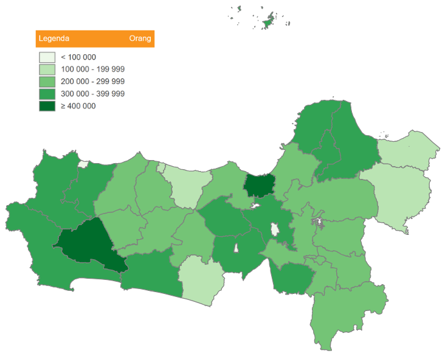

Provinsi Jawa Tengah
Jumlah Tenaga Kerja Menurut Wilayah dan Skala Usaha, 2016

Peta Jumlah Tenaga Kerja Menurut Wilayah dan Skala Usaha Provinsi Jawa Tengah
| No |
Nama Kabupaten/Kota |
UMK |
UMB |
Jumlah |
| 01 | Cilacap | 339,101 | 41,129 | 380,230 |
| 02 | Banyumas | 387,332 | 47,492 | 434,824 |
| 03 | Purbalingga | 219,080 | 66,445 | 285,525 |
| 04 | Banjarnegara | 189,256 | 71,900 | 261,156 |
| 05 | Kebumen | 239,156 | 51,667 | 290,823 |
| 06 | Purworejo | 160,411 | 16,747 | 177,158 |
| 07 | Wonosobo | 204,628 | 32,764 | 237,392 |
| 08 | Magelang | 225,801 | 93,505 | 318,606 |
| 09 | Boyolali | 226,206 | 88,280 | 314,486 |
| 10 | Klaten | 272,699 | 86,651 | 359,350 |
| 11 | Sukoharjo | 177,629 | 98,691 | 276,320 |
| 12 | Wonogiri | 176,221 | 33,823 | 210,044 |
| 13 | Karanganyar | 299,540 | 94,324 | 393,864 |
| 14 | Sragen | 189,157 | 99,132 | 288,589 |
| 15 | Grobogan | 178,544 | 24,780 | 203,324 |
| 16 | Blora | 173,943 | 16,574 | 190,517 |
| 17 | Rembang | 139,145 | 14,357 | 153,502 |
| 18 | Pati | 306,336 | 27,029 | 333,365 |
| 19 | Kudus | 186,219 | 126,490 | 312,709 |
| 20 | Jepara | 288,046 | 74,314 | 362,360 |
| 21 | Demak | 216,064 | 69,021 | 285,085 |
| 22 | Semarang | 182,875 | 95,180 | 278,055 |
| 23 | Kendal | 180,656 | 33,102 | 213,768 |
| 24 | Batang | 162,375 | 19,958 | 182,333 |
| 25 | Pekalongan | 240,241 | 75,409 | 315,650 |
| 26 | Pemalang | 238,841 | 26,509 | 265,350 |
| 27 | Tegal | 287,438 | 40,624 | 328,062 |
| 28 | Brebes | 289,840 | 39,947 | 329,787 |
| 71 | Kota Magelang | 40,387 | 13,584 | 53,971 |
| 72 | Kota Surakarta | 129,984 | 60,290 | 190,274 |
| 73 | Kota Salatiga | 60,654 | 16,617 | 77,271 |
| 74 | Kota Semarang | 345,614 | 345,097 | 690,711 |
| 75 | Kota Pekalongan | 110,955 | 35,350 | 146,305 |
| 76 | Kota Tegal | 66,971 | 27,386 | 94,157 |
| Provinsi Jawa Tengah |
7,601,459 |
1,803,367 |
9,404,826 |
Sumber: Data Sensus Ekonomi 2016 - Badan Pusat Statistik Republik Indonesia